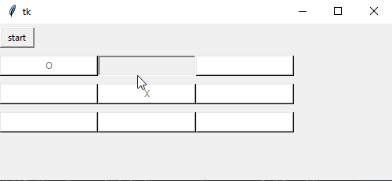

Dom

Za seminarsko nalogo sem se odlocil izdelati program za igranje igre Tri v vrsto, v jeziku python, ker sem mislil, da bo to lahko, saj ze razumem malo pythona in zelel sem se nauciti delati z okni. Okno programa ima na vrhu gumb start in 3x3 mrezo gumbov. Ko kliknes start izberes, kdo zacne in potem igras. Sam postavljas krizce, program pa postavlja krogce. Ko nekdo zmaga, se tri znaki v vrsti pobarvajo in prikaze se okno, ki pove, kdo je zmagal. Za ponovitev igre se ponovno klikne start.